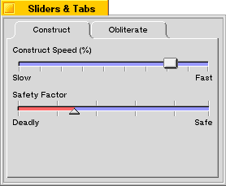
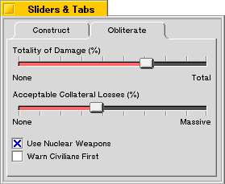

BTabView¶
The tab view is a fairly common construct in modern user interfaces. The BTabView class
serves as a container for a series of BTab objects as well as their target views; the
tabs run horizontally across the top of the view from left to right, and beneath them is a container
view in which the currently-selected tab’s target view is presented. A box is drawn around the
container view to clearly define the relationship between the tabs and the container view.
Creating a BTabView¶
In the figure below, we see a window that contains a BTabView with two
BTab objects attached, called “Construct” and “Obliterate”. The “Construct” tab is
currently selected, and its target view is visible. The target view for the “Construct” tab contains
two BSlider objects (these sliders are used as an example in the BSlider
section and you can learn more about them there).

The BTabView in this window is constructed using the following code, which can be used
in the constructor of the parent window:
BRect r;
BTabView *tabView;
BTab *tab;
r = Bounds();
r.InsetBy(5, 5);
tabView = new BTabView(r, "tab_view");
tabView->SetViewColor(216, 216, 216, 0);
r = tabView->Bounds();
r.InsetBy(5, 5);
r.bottom -= tabView->TabHeight();
tab = new BTab();
tabView->AddTab(new ConstView(r), tab);
tab->SetLabel("Construct");
tab = new BTab();
tabView->AddTab(new DestView(r), tab);
tab->SetLabel("Obliterate");
This code creates a BTabView, then sets its view color to the shade of grey used by
standard BTabView and BTab objects.
Notice that the frame rectangle for the tabs’ target views is being computer by taking the bounds
rectangle of the BTabView, insetting it by five pixels on each side (to leave some room
between it and the bounding box of the BTabView), and subtracting the tab height from
the bottom edge of the rectangle. This places the target view inside the tab view. You can adjust
this computation to position the target view to your liking.
Then two BTab objects are created and added to the BTabView. The
ConstView and DestView classes are derived from BView and represent the “Construct”
and “Obliterate” panels of the window (including the various controls contained in those panels).
When the user clicks the “Obliterate” tab, the window will change to look like this:
